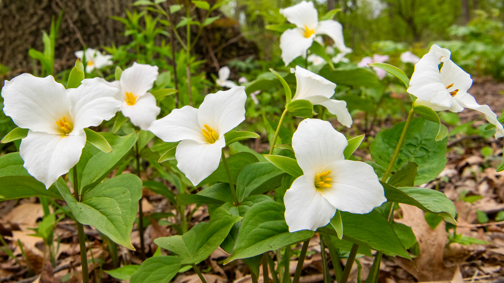

Ontario is the heart of Canada, a province of stunning contrasts. Here, the vibrant energy of world-class cities like Toronto and Ottawa meets the serene wilderness of the Great Lakes and thousands of provincial parks. From its rich history to its diverse cultural scene, Ontario has something for every traveller. Come and explore!
🎥 Explore Ontario in video
Se to korte videoer som viser skjønnheten og kulturen i Ontario.
Symbols of Ontario
Provincial Flower: Ontario adopted the White Trillium as its official flower in 1937, originally considered for WWI graves abroad.
Historical Places
ByWard Market
Ottawa, Ontario
One of my favourite places in Ottawa, the ByWard Market is said to be “where Ottawa was born”. A popular destination for locals and visitors alike, the ByWard Market is one of Canada’s largest and oldest public markets!
Murney Tower National Historic Site
Kingston, Ontario
Overlooking the confluence of Lake Ontario and the St. Lawrence River, Kingston Fortifications National Historic Site of Canada is located in and around the harbour area of Kingston, Ontario.
Toronto Botanical Garden
Toronto, Ontario
The Toronto Botanical Garden has a series of contemporary themed gardens spanning nearly four acres. These unique green spaces are designed for Torontonians and visitors to enjoy the splendour of nature.
Top Attractions in Ontario
Ontario is home to some of Canada's most famous landmarks and natural wonders.
Niagara Falls
Niagara Falls is a group of three waterfalls at the southern end of Niagara Gorge, spanning the border between the province of Ontario in Canada and the state of New York in the United States. The largest of the three is Horseshoe Falls, also known as the Canadian Falls.

CN Tower
Soaring 553.3 meters over the city, the CN Tower is Toronto's most iconic landmark. For an incredible 32 years, it reigned as the world's tallest structure and was even named one of the Seven Modern Wonders of the World.
Royal Ontario Museum
As Canada's largest and most-visited museum, the ROM attracts over a million people each year. It offers a spectacular mix of art, world culture, and natural history, from dinosaur skeletons to fascinating global artifacts.
Parliament Hill
Set on a picturesque hill, Parliament Hill is the home of Canada's government. These stunning Gothic Revival buildings attract three million visitors each year and were established after Queen Victoria chose Ottawa as the capital in 1859.
Where to Dine
Explore the diverse culinary scene of Ontario, from local diners to world-class restaurants.
Canoe
Perched on the 54th floor of the TD Bank Tower, Canoe offers a stylish and modern dining experience with breathtaking views of Toronto and Lake Ontario. The restaurant's design is inspired by Canada's natural environment, creating a chic yet unpretentious atmosphere.
Riviera Ottawa
Riviera Ottawa offers a high-end dining experience with a creative Canadian menu and drinks, all within the refined interior of a former bank building. The restaurant is run by chef-restaurateurs Matthew Carmichael and Jordan Holley, known for their French-inspired menu that includes familiar classics like steak frites and unique dishes such as pig head macaroni.
360 Restaurant
Discover the peak of Canadian fine dining at 360 The Restaurant at the CN Tower. High above the city, 360 completes a full rotation every 72 minutes, giving guests a stunning view that complements fresh, sustainable, regional cuisine from all across Canada—with a wine cellar to match. Reserve today.